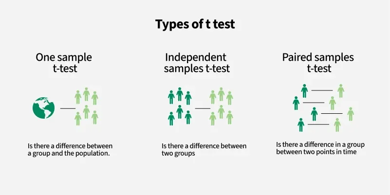

Measuring Relationship
Huanfa Chen - huanfa.chen@ucl.ac.uk
25th October 2025
Last week
Lecture 4 - linear algebra
Looked at:
- Can use mathematical notation to write equations in a univeral language
- Linear algebra helps us to solve systems of linear equations
This week
Objectives
- Understand and calcualte Pearson and Spearman correlation between two variables.
- Understand the difference between Pearson and Spearman correlation.
- Understand ANOVA.
Classification of statistical analysis
- Univariate analysis (for one variable) (W1/2)
- Bivariate analysis (for two variables) (W5)
- Multivariate analysis (for multiple variables) (Further weeks; very common in GIS)
Back to W1: Descriptive statistics of each variable
The most basic statistical information about the dataset and each variable (separately)
- Sample size
- Mean, median, mode
- Variance, standard deviation
- Range
Variance: quantifying spread
Denote city population by \([y_1, y_2, ..., y_n]\) and variance by \(\sigma^2\)
\[ \begin{aligned} \sigma^2 &= \frac{\sum_{i=1}^{n} (y_i - \bar{y})^2}{n} \\ &= \frac{(y_1 - \bar{y})^2 + (y_2 - \bar{y})^2 + \dots + (y_n - \bar{y})^2}{n} \end{aligned} \]
Checklist when you learn a new metric …
Let’s take variance as an exmaple
| Questions | Answer |
|---|---|
| Does it exist for all inputs? | Yes |
| Meaning of sign (+/-) | Non-negative; 0 means all values are identical |
| Range | [0, ∞) |
| Is it normalised (i.e. in [-1,1] or [0,1]) | No |
| Is it symmetric, if it involves multiple inputs? | N/A |
Extending variance to two variables: do A and B change in the same direction? To what extent?
Examples:
- Is the transport accessibility of a neighbourhood related to average housing price?
- Is a student’s attendance in Quantitative Methods related to their performance in the module?
- For schools in England, is the proportion of pupils who are disadvantaged related to the average attainment 8 score? [social & education inequality]
Covariance
\[ \mathrm{Cov}(x, y) = \frac{1}{n} \sum_{i=1}^{n} \left( x_i - \bar{x} \right) \left( y_i - \bar{y} \right) \]
Example
{kind=link}
Compute row by row before summing up
| x - x̄ | y - ȳ | (x - x̄)(y - ȳ) | |
|---|---|---|---|
| 1 | -2.25 | -1.78 | 3.99 |
| 2 | 2.15 | -2.08 | -4.46 |
| 3 | -1.55 | 2.32 | -3.6 |
| 4 | 1.65 | 1.52 | 2.52 |
Covariance = (3.99 + -4.46 + -3.60 + 2.52) / 4 = -0.39
Checklist for covariance
| Questions | Answer |
|---|---|
| Does it exist for all inputs? | Yes |
| Meaning of sign (+/-) | Positive: x, y change in the same direction |
| Range | [-∞, ∞) |
| Is it normalised (i.e. in [-1,1] or [0,1]) | No |
| Is it symmetric, if it involves multiple inputs? | Yes, cov(x,y)=cov(y,x) |
Crisis of covariance: incomparable
- Does Cov = -0.39 tell how much x and y change together, apart from the direction?
- Assuem three variables A,B,C.
- Cov(A,B) = -0.39
- Cov(A,C) = -0.01
- Can we say which A and B are more closely related compared with A and C?
- No
Improvements
- Factors underlying Cov(A,B)
- Direction & extent of A and B changing together
- Magnitude of variability in A and B separately
- Ideally, we want to remove #2.
- Normalisation is the solution. But how?
Pearson correlation
Definition
\[ r_{xy} = \frac{\mathrm{Cov}(X, Y)}{\sigma_X \, \sigma_Y} = \frac{\frac{1}{n} \sum_{i=1}^{n} (x_i - \bar{x})(y_i - \bar{y})} {\sqrt{\frac{1}{n} \sum_{i=1}^{n} (x_i - \bar{x})^2} \; \sqrt{\frac{1}{n} \sum_{i=1}^{n} (y_i - \bar{y})^2}} \]
- \(\sigma_X\) denotes the standard deviation of \(x\) variable.
- Used to measure the linear relationship between two variables.
- How close the data points fall on a straight line
Quiz: what is the unit of Covariance and Correlation?
- unit of values is very important in quantitative analysis.
- You are investigating the relationship between outdoor temperature (in unit of \(^\circ\text{C}\)) and fire service call rates (in unit of \(\text{minute}^{-1}\)). What is the unit of the covariance?
- A. \(^\circ\text{C} \cdot \text{minute}^{-1}\)
- B. unitless
- C. \(^\circ\text{C}\)
- D. \(^{\circ}\text{C}^{2} \cdot \text{minute}^{-2}\)
In the same analysis, what is the unit of correlation?
\[ r_{xy} = \frac{\mathrm{Cov}(X, Y)}{\sigma_X \, \sigma_Y} = \frac{\frac{1}{n} \sum_{i=1}^{n} (x_i - \bar{x})(y_i - \bar{y})} {\sqrt{\frac{1}{n} \sum_{i=1}^{n} (x_i - \bar{x})^2} \; \sqrt{\frac{1}{n} \sum_{i=1}^{n} (y_i - \bar{y})^2}} \]
- A. \(^\circ\text{C} \cdot \text{minute}^{-1}\)
- B. unitless
- C. \(^\circ\text{C}\)
- D. \(^{\circ}\text{C}^{2} \cdot \text{minute}^{-2}\)
History of Pearson correlation

Francis Galton
Image credit: https://commons.wikimedia.org/wiki/File:Portrait_of_Francis_Galton._Wellcome_M0002305.jpg
Karl Pearson
Image credit: https://commons.wikimedia.org/wiki/File:Karl_Pearson,_1912.jpg- This idea was developed by Karl Pearson, based on earlier idea from Francis Galton (in 1880s).
- Karl Pearson is also known for other significant contributions to statistics, including chi-square test.
- \(\chi^2 = \sum_{i=1}^{k} \frac{(O_i - E_i)^2}{E_i}\), measures how closely the observed data match the expected values.
Checklist of Pearson correlation
| Questions | Answer |
|---|---|
| Does it exist for all inputs? | Not when variance of x or y equals 0 |
| Meaning of sign (+/-) | Positive: x, y change in the same direction |
| Range | [-1, 1) |
| Is it normalised (i.e. in [-1,1] or [0,1]) | Yes |
| Is it symmetric, if it involves multiple inputs? | Yes, Cor(x,y)=Cor(y,x) |
Hypothesis testing and p-values of Pearson correlation
Back to hypothesis testing
- There are various ways to test if Pearson correlation is statistically significant.
- One way is using Student’s t-distribution, assuming X & Y have a bivariate normal distribution.
- \(H_0\) (null hypothesis): no correlation between X & Y (or cor = 0) \[ t = \frac{r}{\sigma_r} = \frac{r \sqrt{n - 2}}{\sqrt{1 - r^2}} \]
Where:
- \(t\) = t-statistic
- \(r\) = calculated Pearson correlation coefficient
- \(n\) = number of paired observations
Examples
Question: does cor = 0 mean no relationship between X and Y? NO
Image credit: https://commons.wikimedia.org/wiki/File:Correlation_examples.png#1 Limitation: not working well with non-linear relationship
- Pearson correlation only measures linear association between X and Y.
- It is not a good metric of association if the scatterplot has a non-linear or curved pattern.
- When presenting the correlation, it is always good to include a scatterplot.
#2 Limitation: sensitivity to ourliers
- Pearson correlation involves the average of X and Y and difference between values.
- Therefore, it is sensitive to outliers.
- Again, a scatterplot will help detect outliers.
- If there are obvious ouliers in the data, please address them before conducting analysis.
#3 Limitations: not working with nominal or ordinal data
- Pearson correlation doesn’t work for nominal or ordinal data
- … as we can’t compute the mean or difference on nominal/ordinal data.
Spearman correlation (Spearman’s Rho)
Motivation
- If I’d like to check if X and Y are consistenly increasing/decreasing (aka monotonic), rather than if they fall on a line
- How can I achieve it?
- monotonic relationship is a more general than linear relationship.
- For example, \(y = x^3\) is monotonic but not linear.
- Solution: rank X and Y separately, and then calculate Pearson correlation on the ranked values (rather than orignal values).
Example
Original Values:
| 0 | 1 | 2 | 3 | 4 | 5 | 6 | 7 | 8 | 9 | |
|---|---|---|---|---|---|---|---|---|---|---|
| x | 0.55 | 0.72 | 0.6 | 0.54 | 0.42 | 0.65 | 0.44 | 0.89 | 0.96 | 0.38 |
| y | 0.79 | 0.53 | 0.57 | 0.93 | 0.07 | 0.09 | 0.02 | 0.83 | 0.78 | 0.87 |
Step 1: Ranks:
| 0 | 1 | 2 | 3 | 4 | 5 | 6 | 7 | 8 | 9 | |
|---|---|---|---|---|---|---|---|---|---|---|
| rank_x | 5 | 8 | 6 | 4 | 2 | 7 | 3 | 9 | 10 | 1 |
| rank_y | 7 | 4 | 5 | 10 | 2 | 3 | 1 | 8 | 6 | 9 |
Step 2: Spearman Correlation = 0.0424
Examples
- Spearman correlation doesn’t tell if or how much the relationship is linear
- Spearman & Pearson correlation on the same data are incomparable, as they tell different things.
<Figure size 960x480 with 0 Axes>{kind=link}
Spearman correlation is robust to ourliers (more than Pearson correlation)
On original data, increase the largest X value by 1000
Original Pearson C = 0.3350, Spearman C = 0.0424
Updated Values
| 0 | 1 | 2 | 3 | 4 | 5 | 6 | 7 | 8 | 9 |
|---|---|---|---|---|---|---|---|---|---|
| 0.55 | 0.72 | 0.6 | 0.54 | 0.42 | 0.65 | 0.44 | 0.89 | 1000.96 | 0.38 |
| 0.79 | 0.53 | 0.57 | 0.93 | 0.07 | 0.09 | 0.02 | 0.83 | 0.78 | 0.87 |
Updated Pearson C = 0.2261, Spearman C = 0.0424
Spearman correlation applies to ordinal data (while Pearson correlation doesn’t)
| Nominal | Ordinal | Interval | Ratio | |
|---|---|---|---|---|
| Pearson correlation | ❌ | ❌ | ✅ | ✅ |
| Spearman correlation | ❌ | ✅ | ✅ | ✅ |
Potential limitation of Spearman correlation
- It lies in computational cost for big data
- Spearman correlation requires sorting on X and Y, which is not very efficient on big data
ANOVA (Analysis of Variance)
Motivation
- Pearson/Spearman correlation applies for ordinal/interval/ratio variables.
- What if we want to understand the relationship between a nominal variable and a continuous one?
- For example - in school data, we have average attainment of boys and girls per school. are gender and attainment correlated?
- Let’s rephrase this question as: is there a significant difference on attainment between boys and girls? (Does this sound familiar)
Motivation continued - back to W3 Hypothesis Testing

Image credit: https://www.geeksforgeeks.org/data-science/t-test/- Are gender and attainment are correlated can be answered by paired samples t-test.
Motivated continued - what if there are three or more groups?
- Is there significant difference in school-average attainment across London councils of Camden, Westminster, and Islington?
- ANOVA (ANalysis Of Variance): used to determine if multiple groups are statistically significantly different.
Theory behind ANOVA
- Step 1: break down total variance of values into two parts. Total-variance = within-group-variance + between-group-variance
- Step 2：\(F\) = between-group-variance / within-group-variance
- Step 3: calculate the probability of \(F\) greater than or equal to computed \(F\). The F follows a F-distribution and \(E[F]=1\), if there is no significant difference between groups
Image credit: datanovia.comANOVA has (many) assumptions
- Independence of observations: each subject belongs to only 1 group; every observation is independent of others
- No significant outliers exist
- Normality: The data are approximately normally distributed
- Homogeneity of variances: variance of the outcome variable should be similar in all groups
- These assumptions need to be tested before conducting ANOVA
Assumptions and Testing
| Assumption | Testing |
|---|---|
| Independence of observations | Design-based check, randomization review |
| No significant outliers | Boxplots/Z-scores; be cautious when removing outliers |
| Normality | Shapiro–Wilk test; Q–Q plots |
| Homogeneity of variances | Levene test, Welch test |
ANOVA is flexible
| Feature | One-Way ANOVA | Two-Way ANOVA |
|---|---|---|
| Purpose | Compare means of three or more groups based on one factor | Compare means based on two factors and their interaction |
| Example | Do school attainments vary across LA (Camden/Islington/Westminster)? | Do school attainments vary across LA (Camden/Islington/Westminster) & gender (male/female)? |
| Assumptions | Normality, no outliers, homogeneity of variances, independence | Same as one-way plus assumptions for interaction effects |
| Output | F-statistic, p-value for group differences | F-statistics and p-values for each factor and interaction effects |
Key takeaways
- Can use Pearson/Spearman correlation to measure the relationship between two variables.
- Choose Pearson or Spearman correlation metric based on the dataset and interpret them correctly.
- To measure difference between two groups, use (paired) t-test
- To measure difference between multiple groups, use one-way ANOVA
- To measure difference across two variables, use two-way ANOVA
Practical
-The practical will focus on calculating and interpreting correlation metrics.
- Have you questions prepared!

© CASA | ucl.ac.uk/bartlett/casa